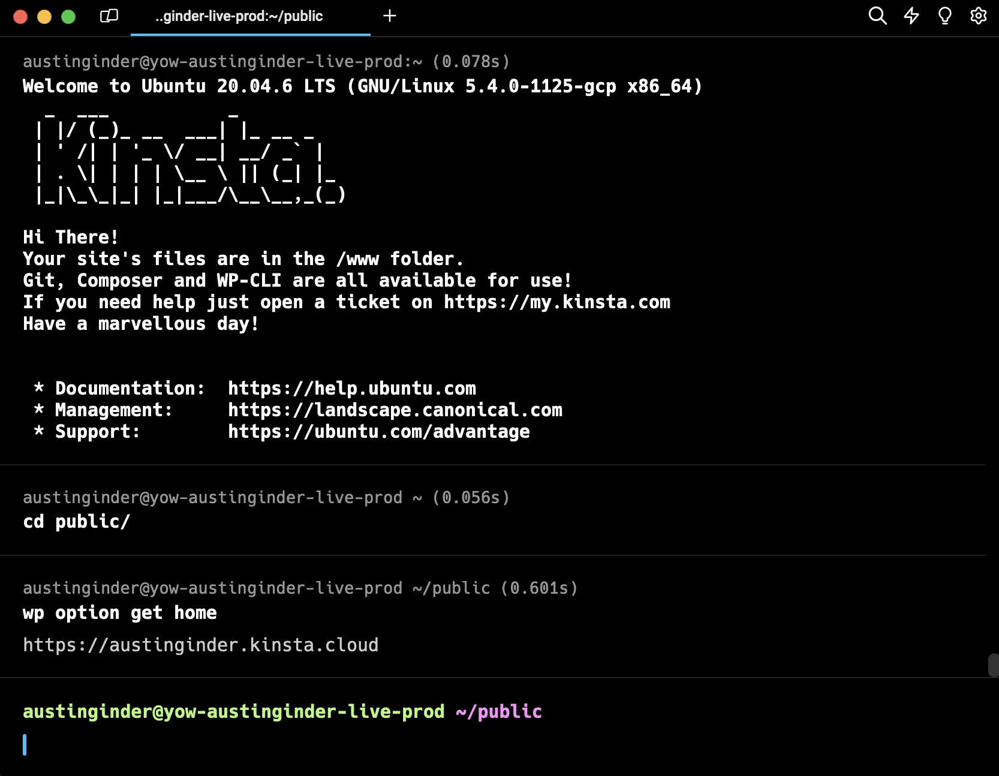
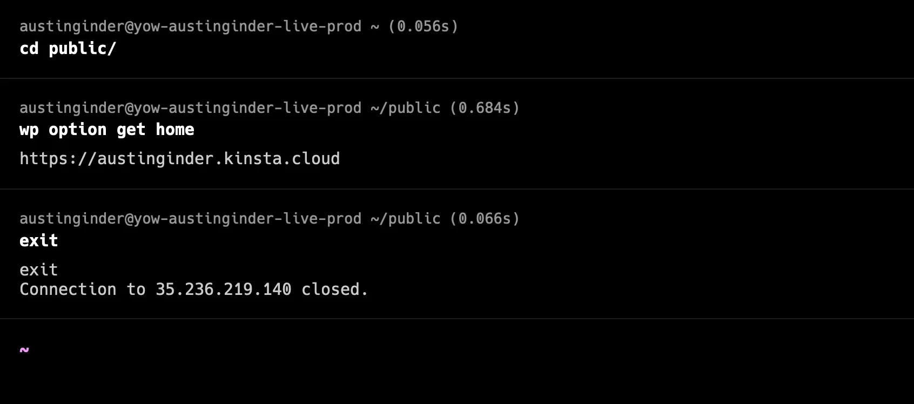

by Austin Ginder
| Server #1 | WordPress Site | Server #2 |
So let's fix that!
wp option get home

exit to close SSH connection

Easy, just three steps. Want to see it again?
/wp-admin/ with SolidBackupscd publicwp db export --add-drop-tablecd ..zip -r backup.zip publicmv backup.zip public/Pro tip, read WP-CLI Database Backups with Emojis:
https://anchor.host/wp-cli-database-backups-with-emojis/
Don't download backups!
Instead migrate using a backup URL